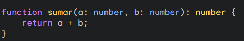

Sintaxis
TypeScript extiende la sintaxis de JavaScript, por lo que si ya conoces JavaScript, algunos conceptos fundamentales son:
Variables y tipos
-
Declaraciones
- Let: variables que pueden cambiar su valor.
- Const: Constantes que no pueden ser alteradas.
- Tipo: Especifica el tipo de variable.
Tipos de variables
- String: Cadena de texto.
- Number: Números (Enteros, flotantes)
- Boolean: Valores booleanos (True, False)
- Null y Undefinied: Valores especiales
- Any: Tipo de comodín (evitar el uso excesivo).
-
Arrays y Tuplas
Arrays

Tuplas
-
Interfaces
Definicion

En TypeScript, una interfaz es una estructura que define la forma de un objeto, especificando qué propiedades y métodos debe tener, sin implementar su lógica.
Implementacion

En TypeScript, una interfaz se implementa en una clase para asegurar que dicha clase cumpla con la estructura especificada.
-
Funciones
En TypeScript, una función es un bloque de código que realiza una tarea específica, recibe parámetros y puede devolver un valor. Se define con la palabra clave function, y puede especificar tipos para los parámetros y el valor de retorno.
-
Clases
En TypeScript, una clase es una plantilla para crear objetos que encapsula datos (propiedades) y comportamientos (métodos), y puede incluir constructores para inicializar objetos.
-
Generic
 En TypeScript, un generic es una forma de crear componentes reutilizables que pueden trabajar con
distintos tipos de datos sin perder la tipificación. Permiten definir clases, funciones o interfaces que
aceptan parámetros de tipo, proporcionando mayor flexibilidad y seguridad en el código.
En TypeScript, un generic es una forma de crear componentes reutilizables que pueden trabajar con
distintos tipos de datos sin perder la tipificación. Permiten definir clases, funciones o interfaces que
aceptan parámetros de tipo, proporcionando mayor flexibilidad y seguridad en el código.